システマティック麻雀工学：
コンピュータと勝負しよう
（回答受付は締め切りました）
概要：
麻雀の数理的研究と何の関係もない場違いな諸君、ようこそシステマティック麻雀研究所へ。
我々は頭を使って麻雀を研究することを旨とする団体である。
つまり、しばしば諸君と意見が対立する団体だと言い換えても良い。
我々はこれまで、対立を引き起こす様々なことを言ってきた。
流れがないということもそうだし、麻雀の強さはルールに依存しないということもそうだったし、諸君のやっている読みなど無意味だというのもそうだった。
麻雀は読みが大事だと認識している諸君は、諸君の身につけた麻雀の技術（切り順からの読みや状況判断）が、とつげき東北によって無下に否定されてしまうことに憤りを覚えていたに違いない。
本当の上級者はとつげき東北のように読みができない人ではなく、もっと別の様々な状況を読む人間であると信じているに違いない。
我々はそれらの主張を、理論と実験を通して証明してきたわけだが、賢明な諸君はあえてそれらに反論しなかった。
諸君は、
「理論が全てではない」「実際に打って勝負だ！」
などと、わざと低脳な発言をして我々を爆笑させてくれた。
しかし、勝負できないというのもつまらない。
そこで我々はここに、純粋に諸君の「読み」能力が発揮できるテストを用意した。
諸君の恐るべき直感的判断があまりにも優れていることを、諸君はコンピュータなどよりずっとうまく読めることを客観的に証明するための、チャンスを用意したのである。
我々が用意したのは、「山に残っている牌を当てるテスト」、言い換えると「次にツモる牌を当てるテスト」である。
数え上げ的な「山牌読みプログラム」に比較して、諸君の読みがどれほど有能であるかをテストできる。
諸君は単に、画像で示された麻雀の各々の状況において、持ち前の読み能力を発揮して、このプログラムを超える素晴らしい読みを発揮してくれるだけでいい。実に簡単である。
このテストの優れている点は、基本的に”ネット麻雀と実戦麻雀の差”などを度外視して、単純に個人の読み能力をテストできる点にある。
「ネット麻雀の打牌なんて読めない」などと言っても始まらない。
コンピュータもまた「ネット麻雀かどうか」などということは一切考慮していないからだ。
得意の「対応力」で、それも考慮に入れて高得点を目指せばよかろう。
ご存知の通り、山牌を読むということは、次にツモる牌を当てることであり、他家のメンツ構成を読むことであり、またアタリ牌を読むことでもある。
卓上で必要な「読み」のほとんどの要素をこの試験は点数化できると言って差し支えない。
「実際に打った成績」などより100倍も正確に「読み技術の高さ」を定量化できるだろう。
プロ、リアル上級者、ネット上級者、いずれもが参加でき、客観的に読み能力をテストすることができる。
試験のルール：
諸君は様々な状況を判断に入れた上で、慎重に「山牌に残っている牌」を推測するといい。
全ての状況に対して、もっとも山に残っていそうな牌（重要な牌）を2つと、その次に残っていそうな牌5つを指定すること（全て異なる7種類の牌を指定せよ）。
予想した牌が実際に山に残っていた枚数を点数とする。また予想したにもかかわらず残っていなかった場合は１点減点とする。
重要な２牌については加点および減点を２倍する。
つまりまあ、「次にツモる確率がもっとも高い牌を、高い順に指定する」と考えてもらって良い。
（その時点で全員の牌をオープンして、誰も持っていない牌、つまり王牌＋残りツモ牌 を当てる）
解答時間は無制限である。
補足：
諸君の優秀な頭脳と異なり、コンピュータの演算は恥ずかしいほどに粗末なものだ。
コンピュータは点数状況を一切考慮しない。相手のツモ切りや、打牌の順序を一切考慮しない。そこが東風荘であるかフリー雀荘であるかを考慮しない。
コンピュータはドラが何であるかに無関心である。リーチ宣言牌が何であるかに興味はない。そもそもリーチという概念が存在しない。
現在の順目や流れなど認識できない。決め（ルール）を把握しない。
相手の狙い役をも全く知らない。もちろん、ラグがどうとかといった、東風特有の読みもしない。
相手が食い仕掛けをしているかどうかさえ見ていない。MJ-0の一番原始的なモードを使った、単純なモデル計算のみである。
これらの成績を比較するわけだから、読みの鋭い諸君は楽勝だろう。
人間は、解答の訂正を行うことができず、また挑戦したからには言い訳ができない。
ルールや方法を全て熟考した上で解答を送るべきだ。適当にやったとか、そういう言い訳は絶対にしてはならない。
諸君の周りにいる「読みが大事」と言ってる者にも、この試験を勧めていただきたい。彼は非常に優秀な成績を収めるか、あるいは墓穴を掘るかのいずれかだろう。
「高度な読みをした結果、コンピュータの数え上げと大して変わらない成績」だったら、その読みは何の役にも立っていないということを頭にいれてチャレンジして欲しい。
なお、とつげき東北は性格が悪いために、「読み」に関して大言壮語を吐いている人を、この試験の受験者として推薦することがある。
彼の言葉と結果（またはどんな言い訳をして受験しなかったかの経緯）については当HPにて引用・紹介される可能性が高いので注意されたい。
システマティック麻雀研究所は、形而上学麻雀を、「自分はすごいんです」と言うだけの麻雀を、心から嫌悪しているのである。
試験への参加：
（このコーナーは締め切りました。ご協力ありがとうございました）
解答は自動採点されるので、解答の書式に必ず従うこと。
マークシート試験のようなもので、解答のしかたを間違うと正しい採点の対象にならない。
解答の書式は、次のようなもの。
問1
1m
2s
東
北
9p
4m
3s
問2
5m
7s
西
発
中
白
8s
・・・（このまま問10まで続ける）
マンズは「1m 2m ・・・」
ピンズは「1p 2p ・・・」
ソーズは「1s 2s ・・・」
と表記する。
字牌は「東 南 西 北 白 発 中」
と表記する。
牌指定は必ず1行に1つだけして、改行すること。
上の例のように、問1～問10に、順に答えること。
全角とか半角について神経質になる必要はない。また「發」などの字にも対応しているから、よほど変な解答でなければ大丈夫である。
「問」という文字を書くことで、問題の区切りがコンピュータに伝わるので、上の例のように「問1 問2 ・・・」のような行を入れること。
解答のうち、各問題の上の2つが「重要」指定の牌である。ムダに「★」とかつけたりしないように。
上の例だと、問1の「重要牌2つ」は１マンと2ソウ、「残りの5牌」は東、北、9ピン、4マン、3ソウとなっている。
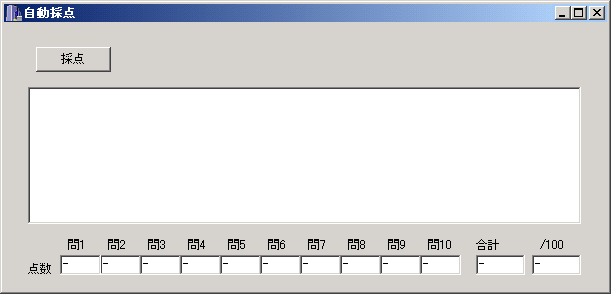
（自動採点くん）
東風荘でのＲや実戦での実績、所属等を明かしても良い場合はそれらの情報を追記せよ。
少なくともHNや通称、あるいはメールの名前などは（本名を除いて）必要に応じて公開される。
なお公正のため、試験結果の得点については基本的に本人に返信するか、後にＨＰ上で公開する。
受験者は、自分の解答と得点の両方を同時に、未受験の者であって将来受験する者に教えてはならない。
本試験問題（10問）：
通常の受験者は、この10問の解答を送ること。
成績上位者は追試験を行う可能性がある。
なお打牌の下に水色の線がついているものはツモ切りである（空切りした場合はつかない）。
東風戦の順位戦で、チップやオカ、赤ドラは存在しない。主に東風荘の超ランでの実際の対局から無作為に取り出した局面である。
1：
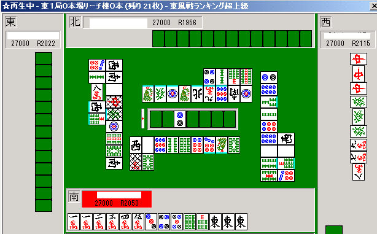
2：
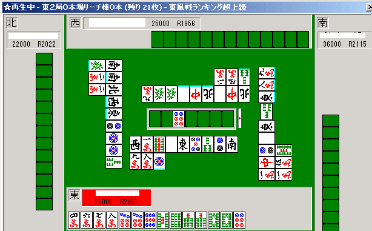
3：
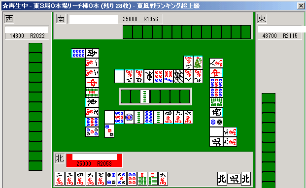
4：
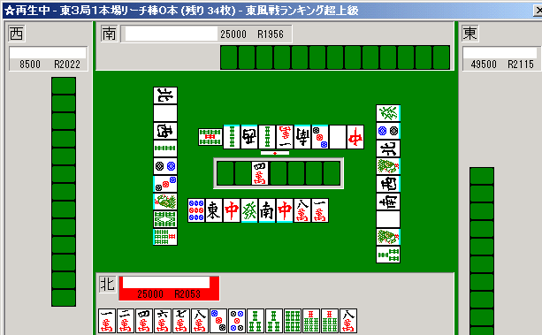
5：
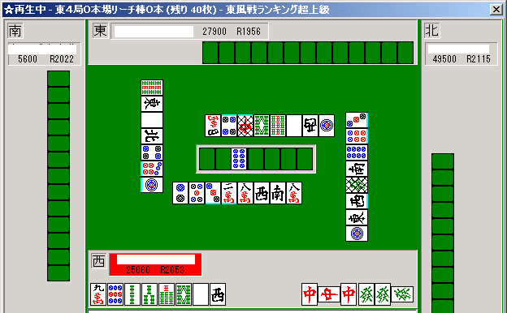
6：
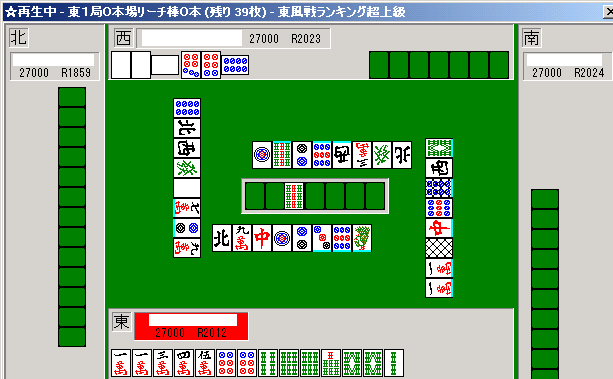
7：
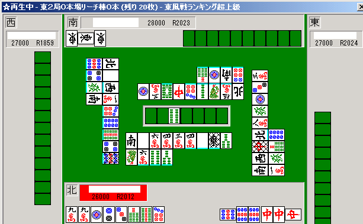
8：
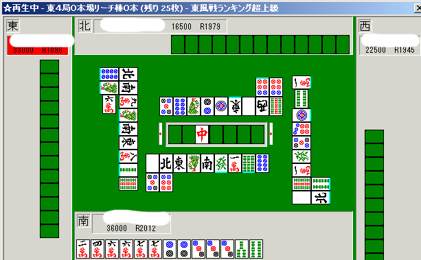
9：
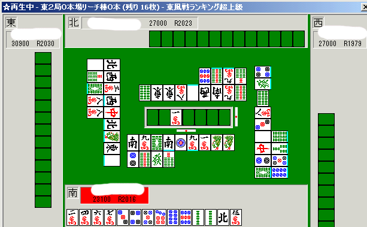
10：
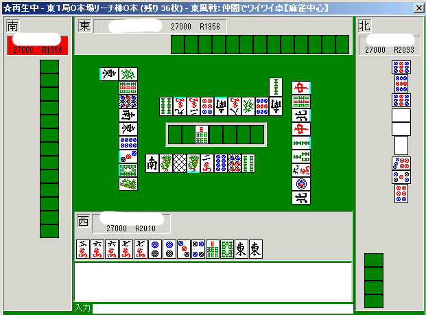
これまでの結果：
| 得点 | 偏差値* | |
| コンピュータ | 183 | 64.3 |
| ぺた | 178 | 61.7 |
| 薔薇と薔薇 | 175 | 61.1 |
| DDH-V | 178 | 60.4 |
| 神龍★獣冴 | 174 | 60 |
| secret | 175 | 60 |
| keiichixx | 170 | 59.8 |
| 雀-Ｘ | 170 | 58.9 |
| keisuke | 168 | 58.4 |
| パンダ狩り | 166 | 57.5 |
| ＪＴ５２３ | 169 | 57.5 |
| いめたろ | 166 | 56.9 |
| ラークロング | 168 | 56.6 |
| とつげき東北 | 167 | 56 |
| 散る桜ゆえ | 165 | 55.8 |
| ueda_9 | 165 | 55.1 |
| Phoenix一輝 | 166 | 54.3 |
| ito | 162 | 54.3 |
| 恥部＠研 | 161 | 53.6 |
| しんや | 160 | 52.4 |
| とうのかな | 156 | 51.5 |
| FT | 152 | 51 |
| すぴんぐらす | 153 | 50.8 |
| ts | 158 | 50.8 |
| 雀豪ＥＤ | 156 | 50.1 |
| 雀天くん | 155 | 49.7 |
| 台風総長 | 148 | 49.5 |
| eks-z | 152 | 48.9 |
| 雀修会次元 | 141 | 46.5 |
| toto_sp | 139 | 42.5 |
| Lee億春 | 131 | 41.9 |
| 赤兎 | 138 | 41.7 |
| さわ | 129 | 40.1 |
| 最後の麻雀 | 124 | 38.3 |
| ジロー | 125 | 38.2 |
| 芹沢名人 | 123 | 35.8 |
| ゆな連☆由奈 | 114 | 35.4 |
| 沖の定置網 | 111 | 31.2 |
1名解答ミス（牌指定が各問で5つしかない)
*偏差値は、各問における各人の点数を偏差値とした後、その合計値を再び偏差値としたものです。
参加者のみなさま、ご協力ありがとうございます。
読みについて（私が批判するような内容を）語っていて、なおかつこの読み問題に挑戦してくれた人たちもいる。
結果はコンピュータの勝利だったが、こんな挑発的な試験に、そうした立場から挑んでくれたこと自体が感服に値する。
彼らとは違って、ほとんどの自称「読みができる」人は、このテストに挑戦する勇気・自信さえないのだから。
「結果が出ないからこそ知ったかぶりして語れる」のが彼らの特徴だと思っていた認識を、少し改めさせられた。
「重要」指定2牌のみでの成績：
| 重要解のみ | 得点 | 偏差値 |
| コンピュータ | 94 | 60 |
| 人間 | 92 | 59 |
| 人間 | 92 | 59 |
| 人間 | 92 | 59 |
| 人間 | 92 | 59 |
| とつげき東北 | 90 | 58 |
| 人間 | 90 | 58 |
| 人間 | 86 | 56 |
| 人間 | 82 | 54 |
| 人間 | 82 | 54 |
| 人間 | 82 | 54 |
| 人間 | 76 | 51 |
| 人間 | 76 | 51 |
| 人間 | 70 | 48 |
| 人間 | 66 | 46 |
| 人間 | 60 | 42 |
| 人間 | 58 | 41 |
| 人間 | 48 | 36 |
| 人間 | 32 | 28 |
| 人間 | 33 | 29 |
「最初の3牌くらいは充分考えられるが、7牌目などはよく考えられない」という意見がいくつかあったので、「重要」指定2牌のみでの結果も出しておく（19名現在）。
当然、「たくさん残っている確からしい牌」になるので、上位層での差はつきにくくなる。
これぐらいになれば運のみでコンピュータを逆転する人がいてもおかしくはない。
しかし、若干の順位変動はあるものの、残念ながら結論はほぼ変わらなかった。
ちなみに、最初のいくつかが簡単に見つかるのは当然のことだ。
どんな局面でも、たいてい、いくつかの牌が山にありそうなことを見抜くことはたやすい。
しかし、たった3つだけ「出やすい」とわかっていたとしても、実戦的にはあまり使えないだろう。
それとも、「集中できるのは5問くらい」だから前半5問だけの結果も集計すれば満足されるだろうか・・・（その場合もコンピュータは1位だが。19名参加現在）。
偶然性が少なくなるよう、10問において、7牌の指定をし、それで結果を導くというこのテストの趣旨をご理解いただきたい。